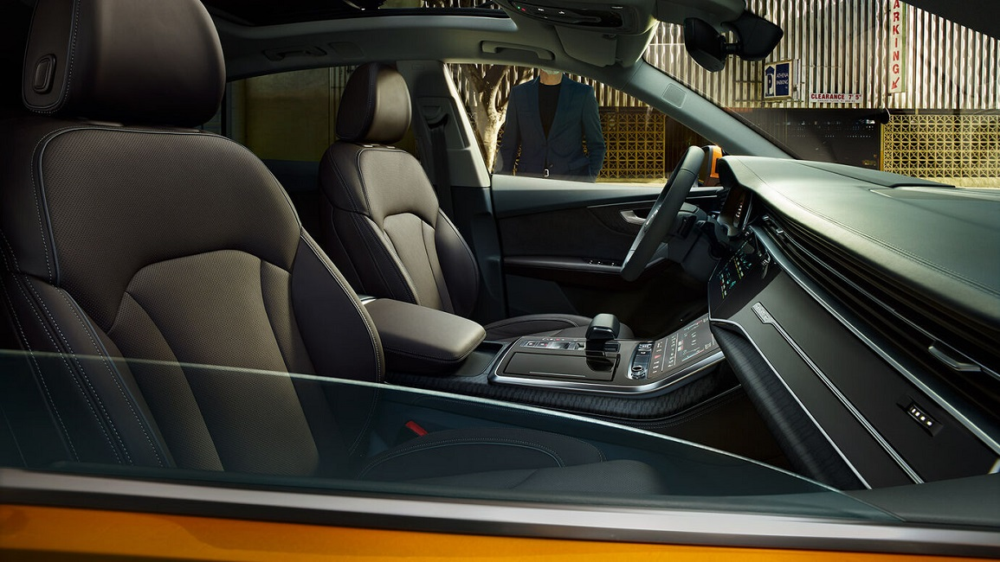

Нове обличчя сімейства Q: Audi Q8
Експресивний дизайн, передові технології та мистецтво задовольняти найвищі вимоги - новий Audi Q8 поєднує в собі всі ключові риси бренду. Його спортивна зовнішність викликає чіткі асоціації з дизайном першої моделі quattro, а нова восьмикутна решітка радіатора Singleframe чітко вказує в майбутнє. Салон чотиридверного позашляховика-купе нагадує зону відпочинку: він просторий, розкішний та пропонує широкі комунікаційні можливості. Різноманітні інтелектуальні системи, починаючи з MMI touch response і закінчуючи системою голосового керування, та високотехнологічна система навігації ведуть просто в цифрову епоху. Ходова частина і привод доповнюють їх впевненою маневреністю, причому в разі потреби - навіть поза дорогами з твердим покриттям.
Нове сяйво: дизайн екстер'єру
Audi Q8 з імпозантною восьмикутною решіткою Singleframe є новим обличчям сімейства Q. Потужна решітка радіатора розташована вертикально, що в поєднанні зі зміщеним вперед спойлером та збільшеними повітрозабірниками з чітко окресленими контурами підкреслює впевнений вигляд автомобіля. Елегантний дах плавно переходить у похилі задні стійки і спирається на виступи у стилістиці quattro над колісними арками, які можуть вміщувати колісні диски діаметром до 22 дюймів. Світлова смужка у задній частині кузова проходить по поверхні чорного кольору. Детальніше про екстер'єр
Спортивні враження від керування: ходова частина
В Audi Q8 ви завжди будете подорожувати в автомобілі
спортивного стилю з поєднанням динаміки та економічності: механічний
міжосьовий диференціал автомобіля у стандартному режимі роботи
розподіляє тягове зусилля між передньою і задньою осями у співвідношенні
40:60. У разі потреби більша частина крутного моменту передається на
вісь із кращим зчепленням. Поряд зі стандартною системою прогресивного
керування, передатне число якої змінюється зі збільшенням кута повороту
керма, в якості опції Audi також пропонує систему рульового управління
всіма колесами. Вона забезпечує поворот задніх коліс на кут до 5
градусів: на малій швидкості задля покращення маневреності задні колеса
повертаються у протилежному до передніх напрямку, тоді як на високій
швидкості з метою покращення стабільності всі колеса повертаються в
одному напрямку. У свою чергу нова технологія середнього гібриду (MHEV)
забезпечує підвищену економічність.
Детальніше про ходову частину
Зрозумілість - нове визначення преміуму: інтер'єр
Сідайте і насолоджуйтесь. Завдяки ширині, що становить два метри, Audi Q8 у ролі позашляховика-купе забезпечує надзвичайне відчуття простору. Стриманий, благородний дизайн, доступні для замовлення індивідуальні контурні сидіння з функцією масажу та вентиляції, чотиризональна автоматична система кондиціонування повітря та пакет якості повітря підкреслюють вишуканість атмосфери салону.
Двигуни
| модифікація | тип двигуна, потужність | об'єм двигуна | паливо |
|---|---|---|---|
| Q8 | 6-циліндровий V-подібний дизельний двигун із системою впорскування Common Rail і турбонаддувом, Mild Hybrid Electric Vehicle (MHEV), 286 к.с. | 2967 | дизель |
| SQ8 | 8-циліндровий V-подібний бензиновий двигун, Mild Hybrid Electric Vehicle (MHEV), 373 к.с. | 3996 | бензин |
| RS Q8 | 8-циліндровий V-подібний бензиновий двигун, Mild Hybrid Electric Vehicle (MHEV), 441 к.с. | 3996 | бензин |